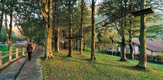
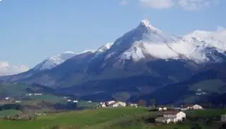

Presentación
Emplazado en un lugar inmejorable, en las estribaciones de la Sierra de Aralar y bajo las faldas del monte Txindoki, se encuentra este acogedor pueblo de Gipuzkoa.
Nada más llegar a la localidad, quedaremos sorprendidos por su casco urbano, donde cabe destacar su hermoso ayuntamiento, con un pórtico de cuatro arcadas, en cuyo interior se mantiene el frontón. A su lado, se halla la iglesia parroquial de San Juan Bautista, que data del siglo XVI, aunque conserva una portada románica del siglo XIII. Asimismo, llaman la atención los caseríos que se encuentran en los alrededores.
Larraitz, bajo el Txindoki
Sin embargo, lo más espectacular de Abaltzisketa es la campa de Larraitz, situada a los pies del Txindoki. Allí, podremos visitar la ermita de Larraitz, del siglo XVIII. Este privilegiado enclave, situado en plena naturaleza, suele ser punto de partida de muchos montañeros para realizar ascensiones a diversas cumbres como el Txindoki, Gambo y Pardarri.
Las fiestas más importantes de la localidad se celebran a finales de junio, en honor a San Juan. Con ese motivo, el día 24 organizan una romería junto a la ermita de Larraitz, y la música y el buen ambiente se apoderan de este apacible lugar.
Más información
Rutas por Abaltzisketa y su entorno
Conoce sus maravillosas rutas por el Txindoki y los montes cercanos.
Planes para disfrutar del Parque Natural de Aralar
El entorno es ideal para conocer un caserío de cerca, degustar queso Idiazabal o probar la sidra.